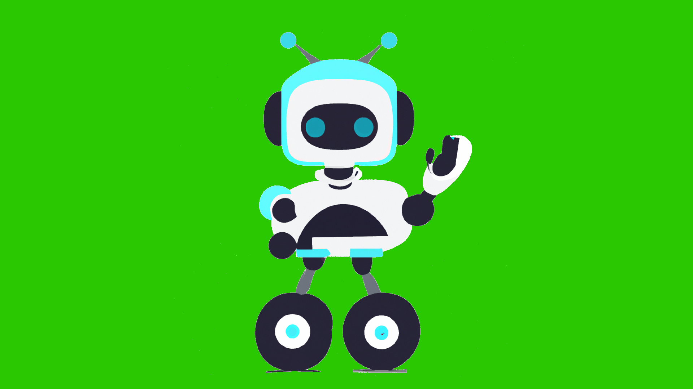
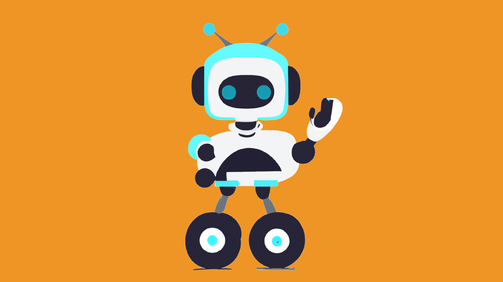
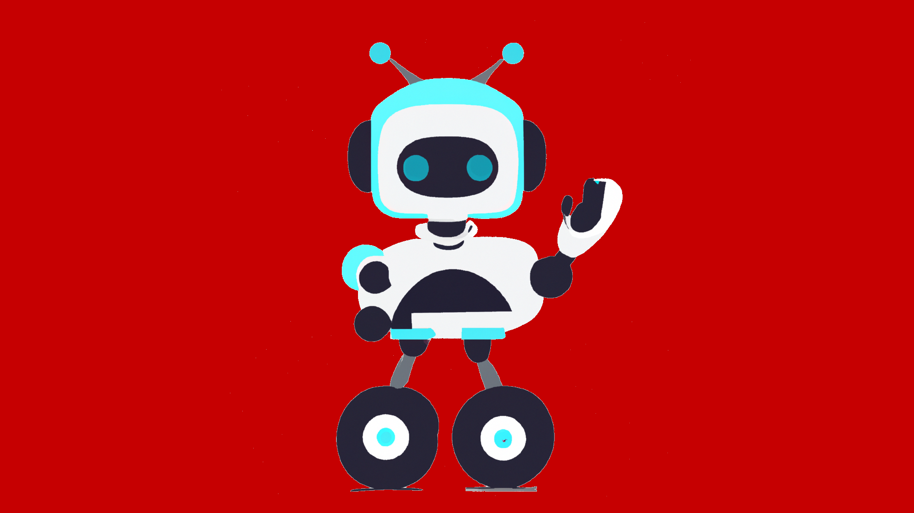

Kursy
kurs z pythona
kurs z AI
kurs z data analiza
kurs z reacta
Zaloguj się
Zarejestruj się
Kurs z obsługi i działania AI

AI Basics

AI Advanced

AI Proficiency
×
Opis kursu
Tutaj będzie opis kursu...